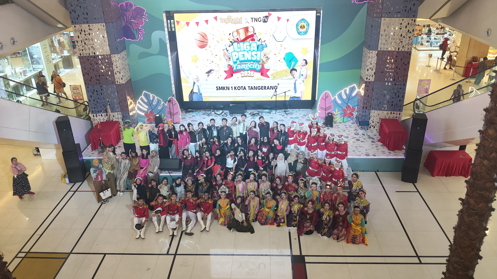

WEBSITE AURELStay weird, be different |
|
|---|---|
| Beranda Tentang Saya Sekolah Lagu | |
Lomba Liga PensihSelasa, 15 September 2026  SMK Negeri 1 Tangerang tampil memukau dalam ajang Liga Pensi yang digelar di Tangcity Mall pada Selasa, 15 September lalu. Dalam kompetisi seni antarsekolah tersebut, kontingen SMKN 1 Tangerang membawakan rangkaian pertunjukan yang sangat bervariasi dan penuh energi. Mulai dari keanggunan tari tradisional, dinamika modern dance, kebolehan seni peran tim teater, ketegasan variasi formasi Paskibra, hingga aksi panggung grup band dan flashmob yang berhasil mengajak seluruh penonton ikut bersorak meriah. Kemeriahan dan keberagaman aksi panggung tersebut menjadi bukti nyata dari besarnya potensi serta kreativitas para siswa SMKN 1 Tangerang. Kolaborasi antarorganisasi dan ekstrakurikuler sekolah terlihat sangat solid, di mana setiap kelompok mampu menyajikan penampilan terbaik yang telah dipersiapkan jauh-jauh hari. Kerja keras dan kekompakan seluruh peserta pun berhasil menyedot perhatian dewan juri serta memadati area panggung utama Tangcity. Usaha dan dedikasi tinggi tersebut akhirnya membuahkan hasil yang manis. Pada pengumuman resmi yang dirilis pada Rabu, 30 September lalu, SMK Negeri 1 Tangerang dinyatakan berhasil meloloskan diri dan mengamankan posisi di babak final Liga Pensi. Capaian membanggakan ini disambut antusias oleh seluruh warga sekolah, yang kini siap memberikan dukungan penuh agar kontingen SMKN 1 Tangerang dapat tampil maksimal dan membawa pulang gelar juara di babak puncak mendatang |
|